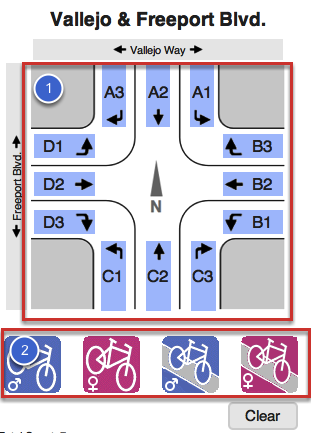
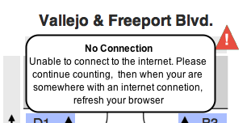

	<div id="wrapper">		
		<div id="LessonContent">
			<div class="LessonHeader">
				<h1 class="LessonTitle">Using the Bike And Walk app</h1>
			</div>
				<div class="summary">
		<p>How to use the Bike And Walk app</p>	
	</div>
			
				<div id="step_1" class="lessonStep top">
	        <h2 class="StepTitle">Get your Assignment</h2>
		<div class="image fullsize">
<a href="images/Using_the_Bike_And_Walk_app/media_1453597081177_lg.png" rel="prettyPhoto" class="image" target="_blank"></a>
<div class="caption"><a href="images/Using_the_Bike_And_Walk_app/media_1453597081177_lg.png" rel="prettyPhoto" target="_blank">Zoom</a></div>
</div> <div class="instructions">
  <p>Your count administrator will have assigned you a location where you will be counting traffic. Usually the assignment comes to you as an email with a clickable web link that will get you started.<br />
Click the link and your browser will open a new page with the form you will be using. It's already pre-configured for your assignment.</p>
</div>
	</div>
	<div class="clear"></div>
	<div id="step_2" class="lessonStep top">
	        <h2 class="StepTitle">Your Assignment Form</h2>
		<div class="image">

</div> <div class="instructions">
  <p>There are two important parts of the form to look at.<br />
<strong>#1</strong> is the "Intersection". This lays out the intersection where you will be counting. Notice the street name labels.<br />
The blue boxes labeled "A1, A2" etc. represents lanes of travel. We'll explain how to use those later.</p>


<p><strong>#2</strong> are the "Travelers". The icons represent the characteristics of the people passing by your location. (your travelers may be different from these) Your count administrator should have given you specific information about what types of traffic you will be counting and this will help you understand which Traveler icon to use, when.</p>
</div>
	</div>
	<div class="clear"></div>
	<div id="step_3" class="lessonStep top">
	        <h2 class="StepTitle">Try it out!</h2>
		<div class="image">

</div> <div class="instructions">
  <p>Before your live count begins, you can practice. Any trips you record before the scheduled start of your count will be quietly ignored so try counting some real or imaginary traffic to get the feel of app. Here's how to do it:</p>


<p><strong>#1</strong> Tap or click on one of the traveler icons. A red box with a "1" in it appears over the icon. Tap again to add another Traveler of the same type. You can tap other Travelers too if there are a mix of people all heading the same way. Tap the button labeled "Clear" below the icons to remove those trips if you make a mistake.</p>


<p>The trips have not been recorded yet. You still need to give the direction of travel.</p>


<p><strong>#2</strong> Tap a "Lane" ("A1, A2, etc.) to indicate their direction of travel. The arrows indicate whether the person went straight through the intersection, turned right or turned left. When you tap the lane it will momentarily change color to confirm your choice and that's it! </p>


<p>You're ready to count your next Travelers.</p>


<p><strong>Correcting Mistakes:</strong><br />
After you tap a lane, the "Clear" button will change to "Undo". If you realize that you've made a mistake, you have 15 seconds to tap the Undo button and remove your last set of trips so you can re-do them.</p>
</div>
	</div>
	<div class="clear"></div>
	<div id="step_4" class="lessonStep top">
	        <h2 class="StepTitle">During The Count</h2>
		 <div class="instructions">
  <p>Most of all <strong>Be Safe!</strong></p>


<p>Find a location where you can see traffic approaching but not too near the roadway. Find some shade if you can. Bring some water.</p>


<p>Watch your time. The app will not give you any indication about when to start or stop counting. All of your trips are recorded, but your administrator will usually ignore any that occur outside of the scheduled time.</p>
</div>
	</div>
	<div class="clear"></div>
	<div id="step_5" class="lessonStep top">
	        <h2 class="StepTitle">After The Count</h2>
		 <div class="instructions">
  <p>Normally your trips are automatically sent over the internet to central data bank throughout the count period. So at the end of the scheduled time, just refresh your browser or wait for about a minute with the your Assignment page open. Either way, all of your trips should have been sent to the central data bank at that point.</p>


<p>If for some reason you do not have an internet connection at your counting location, your browser will be recording all your trips and waiting for an opportunity to send them to the central data bank. The next step describes what happens in this case.</p>
</div>
	</div>
	<div class="clear"></div>
	<div id="step_6" class="lessonStep top">
	        <h2 class="StepTitle">Tommy Can You Hear Me?</h2>
		<div class="image">

</div> <div class="instructions">
  <p>If the app detects that there is no internet connection, an indicator will appear as shown here. Tapping the indicator will give you a brief explanation of the problem. </p>


<p>Continue counting traffic. If the connection is re-established, your data will be sent and the indicator will disappear. If not, when you get to a place where you have an internet connection, simply refresh your browser and your trips will be sent.</p>


<p>Your trips are being saved locally until sent, so even if you close your browser or go to another web site they will be there when you return to your Assignment page. (hint: click the link in your Assignment email)</p>
